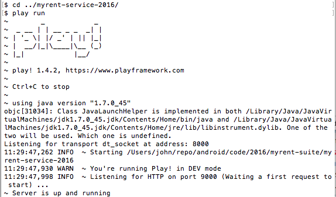
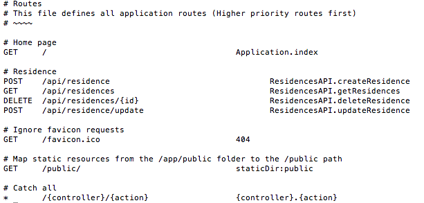
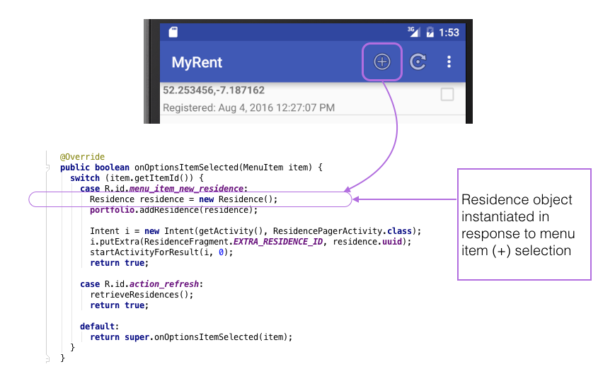
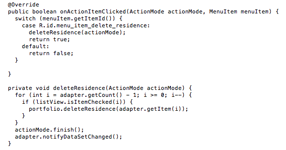
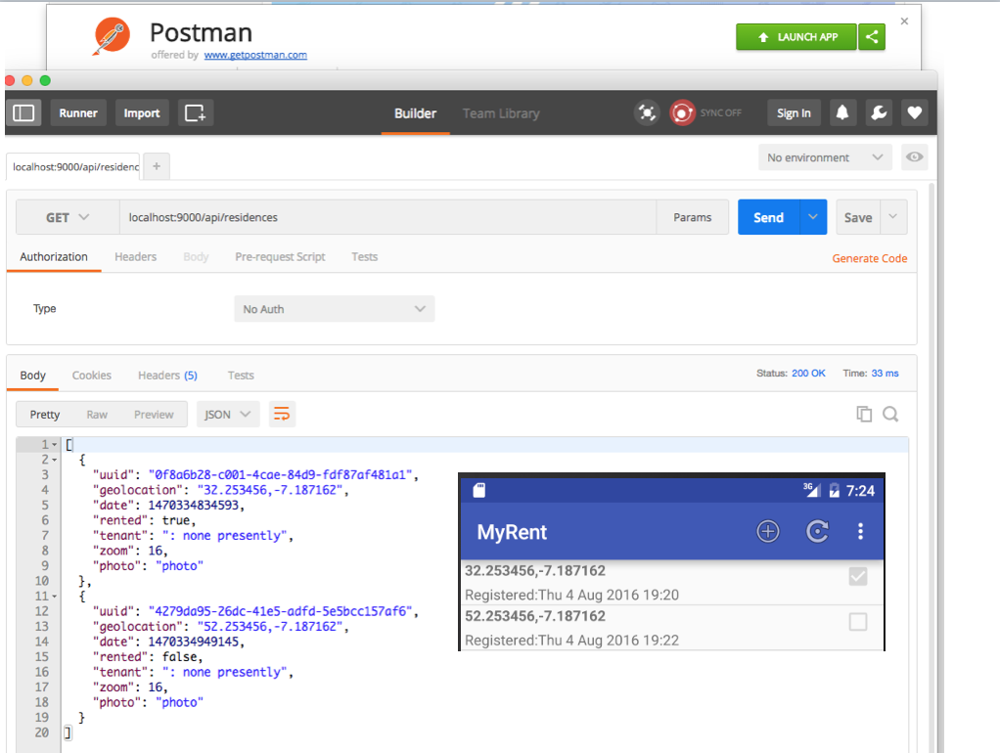

-
Introduction
In a previous lab we introduced an SQLite database. This allows us to retain a local copy of the data. Here we integrate the Retrofit REST client to facilitate manipulation of server-based data. The local and remote data are kept in sync. Testing is performed against localhost and Heroku deployed databases.
-
Setup
Two completed Play apps and an Android app accompany this lab. They are available for downloading as follows:
Play apps
Download MyRent service : a server app configured to run on localhost.
Download JUnit tester : a JUnit app used to test the server app.
These two Play apps correspond to the Andoid app you will have developed at the end of this lab.
To run the service (at the conclusion of the lab):
- Expand the archive.
- Change into the expanded folder
myrent-service-2016. - Run the command
play run

Android app:
Download MyRent Android client.
Figure 2 represents MyRent listview with this lab's features implemented. The only visual difference to the previous version is the presence of the refresh menu item that allows a user to manually refresh the local storage with the content of the remote database. However, significant changes to the code base will become evident as you proceed through the lab.

-
Refresh menu item
Add this code to
res/menu/residencelist.xml:<item android:id="@+id/action_refresh" android:icon="@android:drawable/ic_menu_rotate" app:showAsAction="always" android:title="@string/refresh"/>Add the referenced string to
res/values/strings.xml:<string name="refresh">Refresh Residence List</string>Build and run the app: the rotate icon should now be visible in the list view as shown in Figure 2 in the previous step.
We shall now wire up this menu item and add some skeleton code to allow basic testing. In the file ResidenceListFragment.java add a new item to the method
onOptionsItemSelected:case R.id.action_refresh: retrieveResidences(); return true;Add skeleton code for the
retrieveResidencesmethod:public void retrieveResidences() { Toast.makeText(getActivity(), "Retrieving residence list", Toast.LENGTH_SHORT).show(); }Toast requires importing:
import android.widget.Toast;Test that pressing the menu item published the toast message.
Later, we shall complete the implementation of
retrieveResidences. -
Retrofit setup
Here is the official documentation on the Retrofit client:
Retrofit - Square Open Source.
We shall now integrate this feature.
Add these dependencies to build.gradle (Module: app) and sync the project as prompted at the top of the gradle file:
compile 'com.squareup.retrofit:retrofit:2.0.0-beta2' compile 'com.squareup.retrofit:converter-gson:2.0.0-beta2' compile 'com.squareup.okhttp:okhttp:2.4.0' compile 'com.google.code.gson:gson:2.4'In Android Studio's project window add a package
retrofit.
In this new package create a class ResidenceServiceProxy.java containing the following content:
package org.wit.myrent.retrofit; import org.wit.myrent.models.Residence; import java.util.List; import retrofit.Call; import retrofit.http.Body; import retrofit.http.DELETE; import retrofit.http.GET; import retrofit.http.POST; import retrofit.http.Path; public interface ResidenceServiceProxy { @POST("/api/residence") Call<Residence> createResidence(@Body Residence residence); @DELETE("/api/residences/{id}") Call<String> deleteResidence(@Path("id") Long id); @POST("/api/residence/update") Call<Residence> updateResidence(@Body Residence residence); @GET("/api/residences") Call<List<Residence>> getResidences(); }Sync the project. It should remain error free.
Study the content of this interface and compare it to the routes file in the Play server app downloaded earlier in the project and shown here in Figure 2.

-
MyRentApp
Add imports:
import com.google.gson.Gson; import com.google.gson.GsonBuilder; import com.squareup.okhttp.OkHttpClient; import org.wit.myrent.retrofit.ResidenceServiceProxy; import java.util.concurrent.TimeUnit; import retrofit.GsonConverterFactory; import retrofit.Retrofit;Define a localhost url:
public String service_url = "http://10.0.2.2:9000"; //Android EmulatorAlternatively use the service on Heroku:
public String service_url = "https://myrent-service-2016.herokuapp.com/";This latter will be the one to use if you are testing on a physical device as accessing localhost may be problematic (discovering the full ip address to use).
Define a proxy field:
public ResidenceServiceProxy residenceService;Initialize the proxy in
onCreate:Gson gson = new GsonBuilder().create(); Retrofit retrofit = new Retrofit.Builder() .baseUrl(service_url) .addConverterFactory(GsonConverterFactory.create(gson)) .build(); residenceService = retrofit.create(ResidenceServiceProxy.class); -
Create
Here we shall create a Residence object and transmit it across the network to be saved in the database on the server.
Presently, in the method
onOptionsItemSelected, a new Residence object is created as a reponse to the menu item (+) selection and this object is saved to the local database. See Figure 1.
Additionally, we shall now save the Residence object across the network. But first change the ResidenceListFragment header so as to implement the Retrofit interface Callback, using Residence as a parameter, and implement the interface's methods
onResponseandonFailure:public class ResidenceListFragment extends ListFragment implements OnItemClickListener, AbsListView.MultiChoiceModeListener, Callback<Residence>@Override public void onResponse(Response<Residence> response, Retrofit retrofit) { } @Override public void onFailure(Throwable t) { }These import statements are required:
import retrofit.Call; import retrofit.Callback; import retrofit.Response; import retrofit.Retrofit;We shall shortly complete the implementation of the above two methods.
Add this statement immediately following
portfolio.addResidence(residence)inonOptionsItemSelected:createResidence(residence);Implement
createResidence. It sends an an asynchronous request to the server and elicits a response which is handled by one of of the two methods,onResponse,onFailure.public void createResidence(Residence res) { Call<Residence> call = app.residenceService.createResidence(res); call.enqueue(this); }Here are the the fully implemented Callback methods:
@Override public void onResponse(Response<Residence> response, Retrofit retrofit) { Residence returnedResidence = response.body(); if (returnedResidence != null) { Toast.makeText(getActivity(), "Residence created successfully", Toast.LENGTH_SHORT).show(); } else { Toast.makeText(getActivity(), "Residence null object returned due to incorrectly configured client", Toast.LENGTH_SHORT).show(); } } @Override public void onFailure(Throwable t) { Toast.makeText(getActivity(), "Failed to create residence due to unknown network issue", Toast.LENGTH_SHORT).show(); }Test as follows:
- Start the service: myrent-service-2016.
- Build and deploy MyRent apk to the emulator or physical device.
- Create a new Residence.
- Use the Toast message generated within one of the Callback methods to determine if the new Residence object has been successfully saved to the server database.
-
Update
When a new Residence is created or an existing Residence in the list view is clicked, then the app switches to the Residence details view. In the case of a new residence, the default state is shown. On pressing the up button the app switches back to the list view and in doing so the state of the residence object is updated locally in the SQLite database. Here we shall mimic this behaviour across the network.
ResidenceFragment
Add these import statements:
import android.widget.Toast; import retrofit.Call; import retrofit.Callback; import retrofit.Response; import retrofit.Retrofit;Change the class header so that it implements
Callbackinterface:public class ResidenceFragment extends Fragment implements TextWatcher, OnCheckedChangeListener, OnClickListener, DatePickerDialog.OnDateSetListener, View.OnLongClickListener, Callback<Residence>This necessitates implementation of the interface's methods:
@Override public void onResponse(Response<Residence> response, Retrofit retrofit) { } @Override public void onFailure(Throwable t) { }Write a new method called
updateResidenceand invoke it inonPause:public void updateResidence(Residence res) { Call<Residence> call = app.residenceService.updateResidence(res); call.enqueue(this); }@Override public void onPause() { super.onPause(); updateResidence(residence); portfolio.updateResidence(residence); }Here is the full implementation of the interface methods:
@Override public void onResponse(Response<Residence> response, Retrofit retrofit) { Residence returnedResidence = response.body(); if (returnedResidence != null) { Toast.makeText(getActivity(), "Residence updated successfully", Toast.LENGTH_SHORT).show(); } else { Toast.makeText(getActivity(), "Update failed. Residence null returned due to incorrectly configured client", Toast.LENGTH_SHORT).show(); } } @Override public void onFailure(Throwable t) { Toast.makeText(getActivity(), "Failed to update residence due to unknown network issue", Toast.LENGTH_SHORT).show(); }Test by building, installing the apk, creating a new app which renders the details view and then switching back to the list view. Check the correct Toast message is displayed.
- Make some changes in the details view and switch to the listview. Have the changes persisted?
- Shut down the app and relaunch. Is the listview displaying correctly?
-
Delete
ResidenceListFragment
We have already in place a method to delete a selection of residences:

We shall now add functionality to delete residences across the network.
We have already implemented the Callback interface by refactoring the class header. This implementation has been applied to updating a Residence object. Consequently it is necessary to adopt a slightly different approach to delete a residence. We shall create an inner class named DeleteRemoteResidence and implement the Callback interface on this class. Its methods will then be used to handle to response from the delete network call.
Invoke a method named
deleteResidencewithin the private helper methoddeleteResidencewhich then becomes:private void deleteResidence(ActionMode actionMode) { for (int i = adapter.getCount() - 1; i >= 0; i--) { if (listView.isItemChecked(i)) { Residence residence = adapter.getItem(i); portfolio.deleteResidence(residence); deleteResidence(residence.id); } } actionMode.finish(); adapter.notifyDataSetChanged(); }Implement the new
deleteResidencemethod:public void deleteResidence(String id) { DeleteRemoteResidence delResidence = new DeleteRemoteResidence(); Call<String> call = app.residenceService.deleteResidence(id); call.enqueue(delResidence); }DeleteRemoteResidence is an inner class we define here and that implements the Callback interface:
class DeleteRemoteResidence implements Callback<String> { }This necessitates implementing the interface's methods:
@Override public void onResponse(Response<String> response, Retrofit retrofit) { } @Override public void onFailure(Throwable t) { } -
Refresh
ResidenceListFragment
The final feature we shall implement is the ability to refresh the local data store with the content of the server-side database. This wil be achieved by engaging the menu item (represented by the rotate icon) that we partially implemented earlier in the lab. We shall complete development of this feature now. And in a later lab we shall demonstrate how the process may be automated using a timer or a service.
The approach is similar to that employed for deletion:
- Complete the implementation of
retrieveResidences. - Develop an inner class,
RetrieveResidences, that implements the Callback interface and its methods.
Here is the code:
public void retrieveResidences() { RetrieveResidences retrieveResidences = new RetrieveResidences(); Call<List<Residence>> call = app.residenceService.getResidences(); call.enqueue(retrieveResidences); }class RetrieveResidences implements Callback<List<Residence>> { @Override public void onResponse(Response<List<Residence>> response, Retrofit retrofit) { List<Residence> listRes = response.body(); Toast.makeText(getActivity(), "Retrieved " + listRes.size() + " residences", Toast.LENGTH_SHORT).show(); portfolio.refreshResidences(listRes); ((ResidenceAdapter) getListAdapter()).notifyDataSetChanged(); } @Override public void onFailure(Throwable t) { Toast.makeText(getActivity(), "Failed to retrieve residence list", Toast.LENGTH_SHORT).show(); } }This code will not compile because the Portfolio method invoked in
onResponsedoes not exist. Here it is:/** * Clear local and sqlite residences and refresh with incoming list. * @param residences List residence objects */ public void refreshResidences(List<Residence> residences) { dbHelper.deleteResidences(); this.residences.clear(); dbHelper.addResidences(residences); for (int i = 0; i < residences.size(); i += 1) { this.residences.add(residences.get(i)); } }Test as follows:
- Create a series of residences.
- Use Postman to view the residences on the server database.
- Use Postman to delete a subset of the residences.
- Refresh the residence list on the MyRent app. The resulting number of list items (residences) should correspond to that displayed in Postman.

The application at the end of this lab is available for reference here: myrent-13
- Complete the implementation of